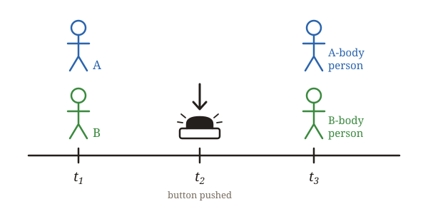
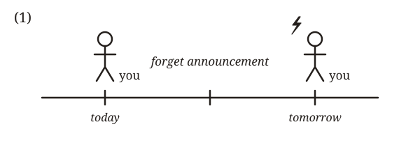
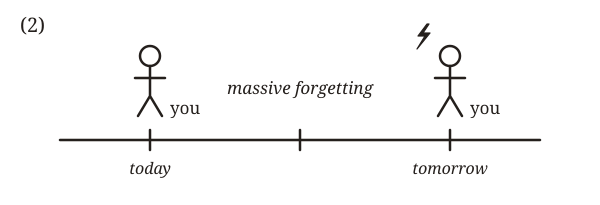

Personal Identity - Williams
PHIL-1 Lecture notes
1. Can we switch bodies?
Williams presents a scenario which many would be tempted to describe as a scenrio in which two individuals switch bodies.
The scenario is as follows:
A is Aaron from Oakland. Fan of the Warriors, runs around Lake Merritt, etc.
B is Bill from Boston. Fan of the Celtics, runs around the Charles River, etc.

At the push of a button, at t2, each has all information extracted from his brain, and then put into the other’s brain.

So, at t3, we have two individuals: the A-body person, and the B-body person.
The B-body person answers to `Aaron’, expresses Warriors fandom, seems to remember going for runs around Lake Merritt, etc.
The A-body person answers to `Bill’, etc.
This seems like a situation where Aaron and Bill have switched bodies (such situations appear in fiction).
What do you think?
What does the Psychological Criterion imply here?
That B-body person = A, since B-body person is uniquely psychologically continuous with A.
That A-body person = B, since A-body person is uniquely psychologically continuous with B.
So the Psychological Criterion agrees with the common, tempting take on this scenario.
Let’s imagine that after this experiement is performed, the A-body person is tortured, and the B-body person is given $100k.

On the view that Aaron and Bill have switched bodies, it is Bill who is tortured, and Aaron who receives the money.
But is this really the correct way to view the situation?
Williams puts forward an argument for saying that the answer is no.
He puts forward an argument for saying that, in this scenario, it is actually Aaron who is tortured and Bill who gets the money.
What’s the argument?
2. The guard cases
Williams’s argument centers on a series of cases that he describes in the long paragraph that starts, “Let’s now consider something apparently different...”
So let’s read through that paragraph together.
Williams starts:
Someone in whose power I am tells me that I am going to be tortured tomorrow.
We can think of this as case 0. In this case, the person in whose power you are---the guard---simply says you will be tortured tomorrow. He doesn’t say anything about something happening to you first, before you are tortured. In other cases he will.
So, in this case, this represents what the guard says will be happening to you.

Williams goes on:
I am frightened, and look forward to tomorrow in great apprehension.
It makes sense, in this case, to be afraid of feeling pain tomorrow.
Williams goes on:
He adds that when the time comes, I shall not remember being told that this was going to happen to me, since shortly before the torture something else will be done to me which will make me forget the announcement.
We can think of this as case 1. In this case, this is what the guard says will happen to you:

Williams continues:
This certainly will not cheer me up, since I know perfectly well that I can forget things, and that there is such a thing as indeed being tortured unexpectedly because I had forgotten or been made to forget a prediction of the torture: that will still be a torture which, so long as I do know about the prediction, I look forward to in fear.
Pay particular attention to the last thing he says. Knowing that I will later forget what I am now being told does not in any way reduce the fear that I have now of being tortured tomorrow.
Once I have been made to forget, I of course won’t be afraid of being tortured, because I won’t know that it’s happening.
But right now, before I’ve been made to forget, I’m still afraid. And it makes sense for me to be afraid.
(In fact, what I’m being told about what will happen to me sounds even scarier than before. Not only will I be tortured, but it will happen unexpectedly.)
Williams continues:
He then adds that my forgetting the announcement will be only part of a larger process: when the moment of torture comes, I shall not remember any of the things I am now in a position to remember.
We can think of this as case 2. In this case, this is what the guard says will happen to you.

Williams comments:
This does not cheer me up, either, since I can readily conceive of being involved in an accident, for instance, as a result of which I wake up in a completely amnesiac state and also in great pain; that could certainly happen to me, I should not like it to happen to me, nor to know that it was going to happen to me.
According to Williams, in this case it still makes sense to be afraid, right now, of feeling pain tomorrow.
Williams goes on: